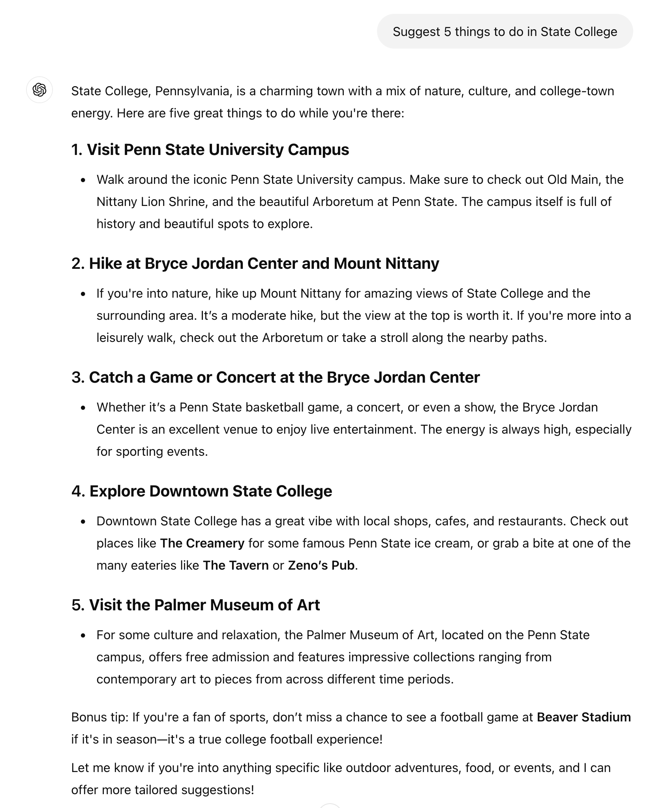

How does Penn State spend your tuition?
Using LLM for data extraction
Recap from last class
We will focus on text based prompting

Key resources
Some definitions first
What’s a prompt?
- “A prompt is an input to a Generative AI model, that is used to guide its output”
- “Prompts may consist of text, image, sound, or other media”
Prompting is for in-context learning (ICL)
“the ability of GenAIs to learn skills and tasks by providing them with exemplars and or relevant instructions within the prompt”
No retraining of models (no model weight updates)
What’s a prompt template?
- “A prompt template is a function that contains one or more variables which will be replaced by some media (usually text) to create a prompt.”
- “a prompt template becomes a prompt when input is inserted into it.”
What’s a prompt template?
“a prompt template becomes a prompt when input is inserted into it.”
Template: “Write a poem about {{TOPIC}}”
- Prompt: “Write a poem about HCAI”
Can have multiple variables
- “Write a {{POEM FORM}} about {{TOPIC}}”
- Write a sonnet about HCAI
Prompt chain
- “two or more prompt templates used in succession”
- “The output of the prompt generated by the first prompt template is used to parameterize the second template, continuing until all templates are exhausted”
Prompt engineering
- “the iterative process of developing a prompt by modifying or changing the prompting technique that you are using”
Prompt components
- Directives
- Examples/Shots/Exemplars
- Output Formatting
- Style
- Role
- Context
- Additional Information
Directives — what’s to be done?
- Explicit
- “Write a poem”
- Implicit
- “Good morning: buen día
- Good night: ”
Examples/Exemplars/Shots
Demonstrations that guide the GenAI to accomplish a task
1-shot
- “Good morning: buen día
- Good night: ”
Few-shot
2+2: four
4+5: nine
8+0:How many shots?
Text based prompting techniques
Text based prompting techniques — lots of options!

Text based prompting techniques
- Zero-shot
- Few-shot
- Chain of thought (CoT)
Meta prompting

Today
- Output formatting
- Data extraction
Output formatting
We often want structured output
When you are using LLMs as a pipeline or infrastructure for further processing, you want consistency
Free form text output is not fun to parse

We want structured output (using Instructor)
import instructor
class Response(BaseModel):
message: str
r = client.responses.create(
input="Write a haiku about IST 597 (HCAI)",
response_model=Response,
)Define the structure of response from LLMs
import instructor
class Response(BaseModel):
message: str
r = client.responses.create(
input="Write a haiku about IST 597 (HCAI)",
response_model=Response,
)response_model: expected structure
Different data types
class User(BaseModel):
name: str
age: intWhat data type should we use for financial data?
class BudgetAnswer(BaseModel):
amount: floatHow does Penn State spend your tuition?
Goal today
- Bridging LLM and external knowledge sources
- Integrate data from different source formats
- html, markdown, pdf,
- Using LLM for financial statement analysis
- Exploring its strength and weakness
How does Penn State spend your tuition?
- Data
- Budget Allocations
- Right To Know Law Report
- Data available in our class github repo
Class activity
Ask LLM to use an external knowledge source directly
- “Analyze the document at the given URL and answer the query”
- Did it work?
Alternative approach
Extract data from external source and integrate in the prompt
I converted the web page into markdown table
We can integrate the markdown data into the prompt
Class activity
How much money is allocated for Information Sciences & Technology in FY28?
Todo
Which UP colleges have the highest positive and negative percentage changes in 2027 and 2028?
Todo
- Analyze the allocation for other units
- Add data from: Commonwealth Campuses
- Click on ‘Raw’ for markdown format
- Come up with 3 questions to answer
- Complete code to answer these questions
- Check answers for accuracy
- Add data from: Commonwealth Campuses
What if our data is in pdf?
3 options for handling pdf data
Do it by yourself
- Extract the text data from the pdf using a third-party package
pymupdfconverts pdf to markdown
Use the vision API to convert image to text
Use the file search API
Using data in pdf format as a knowledge source
- Extract textual data from the pdf using an external library
pymupdf4llm - Use the textual data as part of the prompt
Using
pymupdf4llm for extracting pdf data
## We will extract page 45–46
# Note that `pymupdf4llm` uses 0-based index for pages
highest_paid = pymupdf4llm.to_markdown("right_to_know_2024.pdf", pages=[44, 45])Todo
- How much did the CEO of Penn State Health earn?
- What was the biggest source of PSU revenue?
- How much did Penn State spend on advertising and promotion?
- How much did IST Dean earn?
Processing the whole pdf
highest_paid = pymupdf4llm.to_markdown("right_to_know_2024.pdf")Omitting pages argument will process the whole pdf. What
happens if you try it?
Processing the whole pdf
highest_paid = pymupdf4llm.to_markdown("right_to_know_2024.pdf")This pdf is too large to include in the prompt. Might work for a smaller pdf